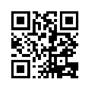
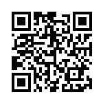

Principios de Lógica Proposicional
🤔 ¿Alguna vez te has preguntado cómo una computadora "piensa" o toma decisiones? La respuesta está en la lógica.
En esta unidad aprenderás a trabajar con proposiciones lógicas (frases que pueden ser verdaderas o falsas) y con conectores lógicos, que son las herramientas que unen esas ideas. A través de ejemplos cercanos a la programación, descubrirás cómo esta forma de pensar te ayudará a crear mejores condiciones en tus programas, tomar decisiones más precisas en tu código y comenzar a pensar como un desarrollador web. 🚀
La lógica proposicional es la base para construir razonamientos complejos y tomar decisiones correctas, no solo en la programación, sino en muchas áreas de la tecnología y la vida diaria. ✨
Objetivos de aprendizaje
- 🧠Comprender los principios fundamentales de la lógica proposicional para representar condiciones de forma clara y precisa.
- 📝Aplicar los conectores lógicos para modelar y analizar situaciones que se presentan en sistemas computacionales.
- 💻Utilizar la lógica proposicional para la toma de decisiones en el contexto de la programación web y el desarrollo de software.
Actividades prácticas
Convierte las siguientes situaciones del mundo de la programación a su forma simbólica. Usa 'p' para la primera proposición y 'q' para la segunda.
Ejercicio 1. Botón de Compra
Situación: En una página web, un botón solo se activa si el usuario inicia sesión (p) y acepta los términos de uso (q).
Expresión Lógica:
Ejercicio 2. Acceso a Contenido Premium
Situación: En una app educativa, un estudiante puede acceder al material premium si inicia sesión (p) o tiene una clave de invitación (q).
Expresión Lógica:
Ejercicio 3. Robot de Patrullaje
Situación: Un robot sólo puede salir a patrullar si tiene batería (p) y está actualizado (q).
Expresión Lógica:
Evaluación
Comprueba lo que has aprendido. Selecciona la respuesta correcta para cada pregunta.
1. La oración "La vaca es blanca", ¿es una proposición?
2. La oración "¿Dónde está el ganado?", ¿es una proposición?
3. ¿Cuál es la forma simbólica de "Una app no deja avanzar si no hay conexión a internet"? (p = hay conexión a internet)
Recursos para profundizar
Para ampliar tu conocimiento sobre lógica proposicional, te recomendamos explorar los siguientes simuladores interactivos:
-

-
Simulador de Lógica en Polypad
Practica la toma de decisiones con compuertas lógicas en un entorno de juegos.
Ir al recurso